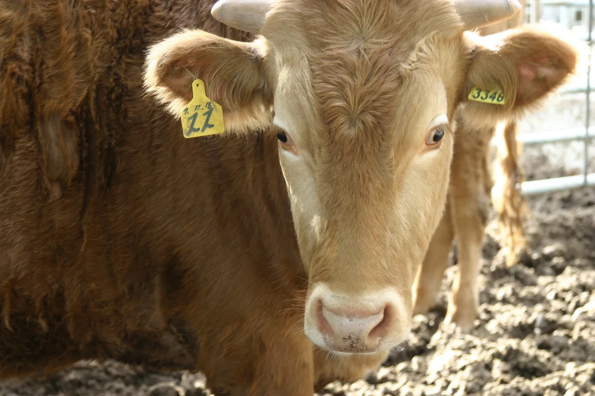
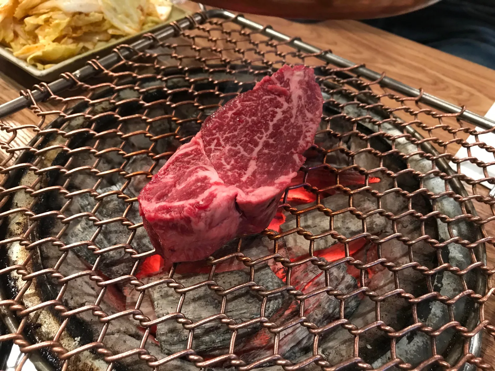
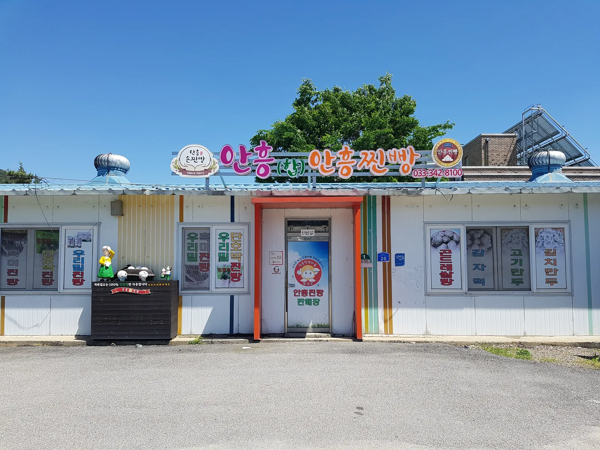
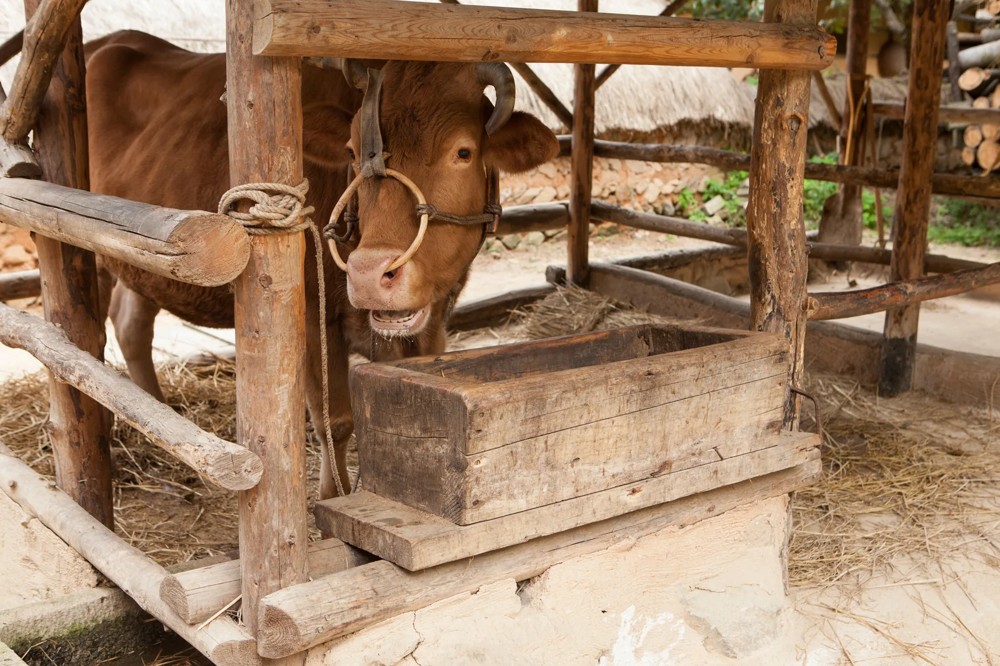

▲ 마블링이 촘촘하게 자리 잡은 횡성한우. 낮은 평균기온과 큰 일교차가 육질을 단단하게 만든다고 알려져 있다
강원 횡성군을 대표하는 축제이자 국내 최대 규모 한우 축제로 꼽히는 횡성한우축제가 2026년에도 어김없이 돌아온다. 2004년 처음 시작해 20년 넘게 이어지고 있는 이 축제는 단순한 먹거리 행사를 넘어 공연·전시·체험이 어우러진 지역 대표 가을 축제로 자리 잡았다. 2026년 축제는 10월 7일(수)부터 11일(일)까지 5일간, 한글날 연휴를 낀 기간에 열려 예년보다 방문객이 몰릴 가능성이 크다. 축제 일정과 프로그램, 횡성한우가 유독 유명한 이유, 가는 법과 주차, 근교 연계 여행 코스까지 방문 전 확인할 정보를 순서대로 정리했다.
1. 2026 횡성한우축제 — 언제, 어디서 열리나
▲ 마블링이 촘촘하게 자리 잡은 횡성한우 생고기. 축제 기간 한우판매장에서 구입해 구이터로 가져가 구워 먹는 방식으로 운영된다 ⓒ Wikimedia Commons
2026 횡성한우축제는 10월 7일(수)부터 11일(일)까지 강원특별자치도 횡성군 횡성읍 섬강둔치 일원(횡성읍 북천리 221 일대)에서 열린다. 2025년보다 시작일이 약 보름 앞당겨졌고, 마침 한글날 연휴(9~11일)와 겹치는 만큼 주말·연휴 방문객이 집중될 가능성이 높다. 입장료는 무료이며, 한우 시식과 구매, 각종 체험 프로그램만 유료로 운영된다. 정확한 최신 공지는 시즌이 가까워지면 공식 홈페이지에서 확인할 수 있다.
횡성한우축제 공식 홈페이지에서 최신 일정 확인 가능2. 횡성한우가 특별한 이유 — 사육 환경과 인증제도

▲ 귀에 부착된 개체식별번호(귀표). 소고기 이력제를 통해 출생부터 도축·가공·유통까지 전 과정을 추적할 수 있다 ⓒ Wikimedia Commons
횡성은 예로부터 전국 4대 우시장 중 하나였던 횡성우시장이 있던 '한우의 고장'이다. 산간지역이면서도 논농사가 발달해 소의 주요 먹이인 볏짚을 구하기 쉽고, 일교차가 뚜렷하고 오염원이 적은 청정한 환경이 우수한 한우를 사육하기에 적합한 조건으로 꼽힌다. 여기에 1984년부터 이어진 우수 혈통(HSPN) 관리가 더해져 육질이 단단하고 구웠을 때 육즙과 향미가 풍부한 것이 특징으로 알려져 있다.
품질 신뢰도를 뒷받침하는 것은 횡성군수 품질 인증제다. 이는 전국 최초로 도입된 지자체 단위 인증제로, 횡성에서 태어나 자라고 횡성군이 지정한 도축장에서 가공한 한우만을 인증한다. 여기에 국가 차원의 소고기 이력제가 더해져, 소비자는 개체식별번호를 이력제 홈페이지(mtrace.go.kr)에서 조회해 출생부터 도축·가공·유통까지 전 과정을 확인할 수 있다. 최근에는 할랄 인증을 받아 해외 시장 진출도 넓히는 추세다.
3. 축제 프로그램 — 한우구이터부터 불꽃쇼까지

▲ 숯불에 굽는 한우. 축제장에서는 한우판매장에서 고기를 산 뒤 구이터로 옮겨 직접 구워 먹는 셀프구이 방식이 운영된다 ⓒ Wikimedia Commons
축제의 중심은 역시 횡성한우구이터다. 2026년에는 구이터 3개소와 한우판매장 3개소가 운영되며, 판매장에서 고기를 구입한 뒤 구이터로 이동해 직접 구워 먹는 셀프구이 방식이다. 구이터 운영시간은 10:00~21:00이다. 이 밖에 다양한 지역 먹거리를 맛볼 수 있는 맛마당 푸드존과 로컬팜 마켓도 함께 열린다.
볼거리와 즐길거리도 풍성하다. 유명 가수들이 출연하는 우(牛)아한 뮤직페스타가 매일 저녁 19~21시 진행되며, 날짜별로 출연진이 바뀐다. 밤하늘을 수놓는 우(牛)주 불꽃쇼는 7일과 10일 밤 9시부터 약 15분간 두 차례만 열리므로, 불꽃쇼를 보려면 두 날짜 중 하루를 골라야 한다. 불꽃쇼가 끝난 7일·10일 밤 9시 15분부터는 메인무대에서 복고풍 콘셉트의 횡성 나이트 1988이 이어지며, 이 밖에 타임슬립 레트로거리, 야간 경관을 즐기는 섬강별빛유등페스타, 아이들을 위한 추억놀이터 키즈파크, 막걸리를 체험하는 국순당 주향체험관 등 다양한 부대 프로그램이 마련된다.
| 항목 | 내용 |
|---|---|
| 기간 | 2026년 10월 7일(수)~11일(일), 5일간 |
| 장소 | 강원특별자치도 횡성군 횡성읍 섬강둔치 일원(섬강로 6 인근) |
| 입장료 | 무료(한우 구매·구이터 이용은 별도 유료) |
| 한우구이터 | 3개소 운영, 10:00~21:00, 셀프구이 방식 |
| 불꽃쇼 | 10월 7일·10일 21:00~21:15(약 15분) |
| 음악 공연 | 매일 19:00~21:00, 날짜별 출연진 상이 |
| 주차 | 10개 구역, 약 2,930대 수용(공식 안내도 기준) |
| 문의 | 033-808-8006 |
4. 가는 법·주차 — 혼잡을 피하는 요령
자가용을 이용할 경우 축제 공식 안내도에 표시된 10개 주차구역에 총 2,930대가량을 수용할 수 있으며, 축제 기간에는 횡성역 노선과 시내 순환 셔틀버스도 운영된다. 한글날 연휴(9~11일)와 주말이 겹치는 만큼 이 기간 혼잡이 예상되며, 상대적으로 평일인 8일(목)이 혼잡도가 낮은 방문 날짜로 꼽힌다. 대중교통을 이용한다면 횡성역이나 횡성종합터미널에서 축제장까지 이동하는 셔틀·시내버스 이용이 편리하다.
5. 연계 여행 코스 — 횡성호수길과 안흥찜빵마을

▲ 안흥면 소재 안흥찐빵 판매장. 1960년대부터 이어진 안흥찐빵은 횡성 여행에서 빠지지 않는 먹거리로 꼽힌다 ⓒ Wikimedia Commons
2000년 횡성댐 준공으로 생긴 횡성호를 따라 조성된 횡성호수길은 총 31.5㎞, 6개 코스로 이뤄진 트레킹 명소다. 이 중 가장 인기 있는 구간은 5구간 가족길로, 강원 횡성군 갑천면 구방리 망향의동산에서 출발해 되돌아오는 약 9㎞ 회귀형 코스다. 전망대를 지나는 A코스(4.5㎞, 약 1시간 30분)와 원시림 숲길 위주인 B코스 '오색꿈길'(4.5㎞, 약 1시간 30분)로 나뉘며, 가을이면 호수 물빛에 단풍이 비쳐 특히 아름답다는 평가를 받는다. 이용시간은 3~10월 09:00~17:00, 11~2월 09:00~16:00이며 이용료는 일반 2,000원이다.

▲ 횡성호와 주변 마을 풍경. 2000년 횡성댐 준공으로 생긴 호수를 따라 횡성호수길이 조성됐다 ⓒ 횡성군청 제공

▲ 전통 방식 외양간과 여물통. 볏짚을 구하기 쉬운 산간·평야 혼재 지형이 횡성 한우 사육의 오랜 배경으로 꼽힌다 ⓒ Wikimedia Commons
축제장에서 차로 30분가량 떨어진 안흥찐빵 모락모락마을도 함께 묶기 좋은 코스다. 1960년대부터 이어져 온 안흥찐빵의 역사를 소개하는 모락모락 라운지, 직접 찐빵을 빚어보는 체험관, VR 체험 시설과 놀이터까지 갖추고 있다. 위치는 강원특별자치도 횡성군 안흥면 주천강로 1868이며, 화요일부터 일요일 09:00~18:00 운영하고 매주 월요일과 설·추석 당일은 쉰다. 이 밖에 횡성 루지 체험장, 풍수원 성당 등을 하루 일정에 더해 '횡성호수길 → 축제장 → 안흥찐빵마을' 순서로 묶는 여행자도 많다.
한국관광공사에서 안흥찐빵마을 안내 확인 가능✅ 2026 횡성한우축제, 가기 전 체크리스트
· 기간: 2026년 10월 7일(수)~11일(일), 섬강둔치 일원, 입장료 무료
· 한우구이터 3개소·판매장 3개소 운영, 셀프구이 방식, 10:00~21:00
· 불꽃쇼는 7일·10일 밤 9시(약 15분)만 진행, 음악 공연은 매일 19~21시
· 횡성한우는 1984년부터 이어진 혈통 관리, 횡성군수 품질 인증제·소고기 이력제로 신뢰도 보장
· 주차 10개 구역 약 2,930대, 셔틀버스 운영, 평일(8일)이 상대적으로 한산
· 연계 코스로 횡성호수길 5구간(약 9㎞, 이용료 2,000원)과 안흥찐빵 모락모락마을 추천
· 정확한 세부 일정은 공식 홈페이지(happyhanwoofestival.com)에서 재확인 필요